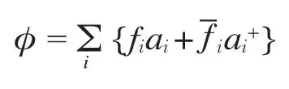
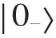
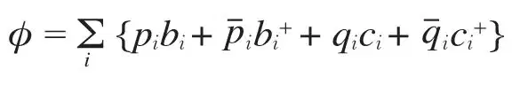
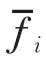
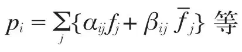
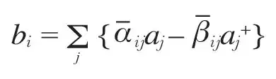
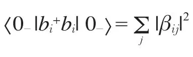
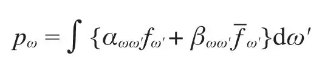
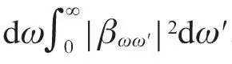

英文
英文霍金
编者按
人们在两百多年前就已经意识到，对于给定的半径有一个临界质量，当物体的质量超出临界质量时，其引力场就强到甚至连光都不能逃脱——这样的物体变成了“黑洞”。这一想法在广义相对论中得到了严格验证。本文中，斯蒂芬·霍金向我们表明黑洞有跟其质量成反比的等效温度，因此它必须从其事件视界向外辐射光子和中微子——即它们并不完全是“黑”的。黑洞在辐射过程中会损失质量，最终释放出大量的X射线和伽马射线，并在一次爆炸之后消失。虽然目前还没有直接观测到，但人们普遍相信黑洞存在“霍金辐射”。 英文
在计算黑洞的形成和演化时，一般可忽略量子引力效应。这一点的合理性在于，在事件视界外的时空曲率半径远大于普朗克长度 cm，而在此尺度上预期度规的量子涨落是1的量级。这意味着由引力场产生的粒子的能量密度和时空曲率相比要小。虽然量子效应在局部很小，然而它们仍然可能在宇宙的寿命≈1017s内积累产生重大的影响，这个时间远长于普朗克时间≈10–43 s。这篇快报的目的是说明，似乎任何黑洞都将以预期的速率产生和发射粒子，如中微子或光子，正如同黑洞是一个温度为
cm，而在此尺度上预期度规的量子涨落是1的量级。这意味着由引力场产生的粒子的能量密度和时空曲率相比要小。虽然量子效应在局部很小，然而它们仍然可能在宇宙的寿命≈1017s内积累产生重大的影响，这个时间远长于普朗克时间≈10–43 s。这篇快报的目的是说明，似乎任何黑洞都将以预期的速率产生和发射粒子，如中微子或光子，正如同黑洞是一个温度为 的物体所表现的那样，其中
的物体所表现的那样，其中 是黑洞的表面引力[1]。当黑洞发射这类热辐射时，我们预期它将损失质量。这本身将增大它的表面引力，因而增大其发射速率。从此，黑洞将具有1071(M⊙/M)–3 s量级的有限寿命。对于太阳质量的黑洞，这将比宇宙年龄更长。然而，可能存在许多较小的黑洞，它们是由早期宇宙中的涨落形成的[2]。任何这类质量小于1015 g的黑洞到现在都应该蒸发殆尽了。在接近它生命终了时，其粒子发射速率将非常高，在最后0.1s将释放约1030 erg能量。以天文学的标准来看，这是一个相当小的爆炸，但它相当于大约一百万个100万吨量级的氢弹爆炸。 英文
是黑洞的表面引力[1]。当黑洞发射这类热辐射时，我们预期它将损失质量。这本身将增大它的表面引力，因而增大其发射速率。从此，黑洞将具有1071(M⊙/M)–3 s量级的有限寿命。对于太阳质量的黑洞，这将比宇宙年龄更长。然而，可能存在许多较小的黑洞，它们是由早期宇宙中的涨落形成的[2]。任何这类质量小于1015 g的黑洞到现在都应该蒸发殆尽了。在接近它生命终了时，其粒子发射速率将非常高，在最后0.1s将释放约1030 erg能量。以天文学的标准来看，这是一个相当小的爆炸，但它相当于大约一百万个100万吨量级的氢弹爆炸。 英文
为了解释黑洞热辐射是如何产生的，为简单起见，在一个包含由一颗恒星塌缩形成的一个黑洞的渐近平直时空中，考虑一个无质量的厄米标量场φ，且它遵守协变波动方程φ; ab gab = 0。海森堡算符φ可表示为：

其中，fi是波动方程fi;abgab=0的一族渐近向内、频率为正且完备正交归一复数解，它们在过去类光无穷远I–[3,4,5]只含有正频率。对于入射的标量粒子，位置无关的算符ai和 分别解释为湮灭和产生算符。因此对于所有的i，初始真空态，即不含有向内传播的标量粒子的态，可定义为ai
分别解释为湮灭和产生算符。因此对于所有的i，初始真空态，即不含有向内传播的标量粒子的态，可定义为ai

= 0。算符φ也可以用代表向外的波和穿过事件视界的波的解表示：
其中，pi是波动方程的解，它们在视界上为零且是渐近向外的正频波（在未来类光无穷远I+为正频率），而qi是不含向外成分的解（它们在I+为零）。就现在的目的而言，即使可以被定义，qi在视界处也不一定是正频的。因为零静止质量的场完全被它们在I－的值确定，pi和qi可以表示为fi和

的线性组合：
因为在塌缩期间度规的时间依赖性将导致一定量的正频和负频的混合，所以βij将不为零。令φ的两个表达式相等，可以发现向外传播标量粒子的湮灭算符bi可以表示为向内湮灭和产生算符ai和的线性叠加，即：

于是在没有向内态的粒子时，第i个向外态的粒子数算符 的期望值为：
的期望值为：

因此，在一次引力塌缩中产生并发射到无穷远的粒子的数目可以通过计算系数βij确定。考虑一个简单的例子，塌缩是球对称的。波动方程的解对角度的依赖可以用球谐函数Ylm表示，对推迟或超前时间u、υ的依赖可以取为ω–1/2 exp (iωu)（这里使用了连续归一化）。向外的解plmω现在可以表示为对相同l和m的向内的场的积分：

这里略去了lm下标。为计算αωω'和βωω'，考虑一个在I+为正频ω，在时空中反向传播的不穿过视界的波。这个波的一部分将被黑洞外的静态史瓦西解的曲率散射并将在I–上以相同的频率ω终止。这将导致αωω'的δ(ω–ω')行为。这个波的另外一部分将向后传播到恒星中，通过原点然后向外再到I–。这些波将有非常大的蓝移，并将以渐近形式接近I–：
Cω–1/2 exp {–iω–1 log (υ0–υ) + iωυ}，当υ < υ0时
当υ ≥ υ0时，这个蓝移值为0。其中，υ0是最后的超前时间，此时的粒子尚可脱离I–，通过原点并逃向I+。作傅里叶变换可以发现对于大的ω'，αωω和βωω'有如下形式：
αωω' ≈ C exp [i(ω–ω')υ0](ω'/ω)1/2 · Γ(1–iω/) [–i(ω–ω')]–1+iω/
βωω' ≈ C exp [i(ω+ω')υ0](ω'/ω)1/2 · Γ(1–iω/) [–i(ω+ω')]–1+iω/
在频率范围ω→ω + dω产生的向外粒子的总数为

，并由上面的表达式可以看出这个量是无限的。通过考虑在较晚的推迟时间的、峰值频率ω的向外波包，可以看到这个无限的粒子数对应于较晚推迟时间的一个稳态发射率。可以通过以下方法估计这个发射率。波中来自I+的在较晚推迟时间进入恒星的部分（如果这部分存在的话）和穿过史瓦西解的过去视界的部分几乎相同，峰值在ω处的波包中的概率流大致正比于 ，其中，ω2' ≫ ω1' ≫ 0。在上面给出的αωω'和βωω'的表达式中，[–i(ω–ω')]–1+iω/和[–i(ω+ω')]–1+iω/因子中有一个对数奇点。这个表达式在不同面上的值相差一个exp(2πnω–1)因子。为得到正确的αωω'和βωω'的比值，必须在上半ω'平面围绕奇点对[–i(ω+ω')]–1+iω/进行延拓并将ω'换为–ω'。这意味着对于大的ω'：
，其中，ω2' ≫ ω1' ≫ 0。在上面给出的αωω'和βωω'的表达式中，[–i(ω–ω')]–1+iω/和[–i(ω+ω')]–1+iω/因子中有一个对数奇点。这个表达式在不同面上的值相差一个exp(2πnω–1)因子。为得到正确的αωω'和βωω'的比值，必须在上半ω'平面围绕奇点对[–i(ω+ω')]–1+iω/进行延拓并将ω'换为–ω'。这意味着对于大的ω'：
|αωω'| = exp (πω/)|βωω'|
由此可得，这个波包模式中发射的粒子数是从I–入射到黑洞上的类似波包中已被吸收的粒子数的[exp(2πω/)–1]–1倍，但这正是根据几何单位下温度为/2π的物体所预期的吸收和发射截面之间的关系。类似结果对任何整数自旋的无质量场也同样成立。对半整数自旋，正如我们对费米子的热辐射所预期的那样，也能得到类似结果，只是发射截面是吸收截面的[exp(2πω/)+1]–1倍，这些结果似乎并不依赖于只是为了简化计算而采取的精确球对称性假设。 英文
贝肯斯坦[6]在热力学基础上提出，的某个倍数应该被看作黑洞的温度。然而，他并未提出，黑洞可以像吸收粒子一样发射粒子。因此，巴丁、卡特和我曾经认为，和温度之间的热力学的相似性只是一种类比。然而，目前的结果似乎表明，可能存在比这更多的内容。当然，这个计算忽略了粒子对度规的反作用以及度规本身的量子涨落，这些不排除会改变这个物理图像。 英文
这项工作的进一步细节将在其他地方发表。作者非常感谢吉本斯给予的建议和帮助。 英文
（沈乃澂 翻译；肖伟科 审稿）